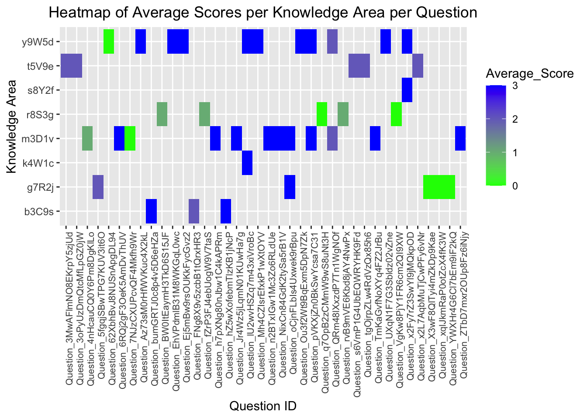

pacman::p_load(geojsonR,rjson,sf, dplyr,tidyr,stringr,readr,fs,purrr,ggplot2, plotly, ggstatsplot,igraph,lubridate,hms, vcd, ggalluvial, ggforce)chinavis_01
5. Getting Started
5.1 Loading R packages
We load the following R packages using the pacman::p_load() function:
5.2 Importing data
The code chunk below imports the dataset into R environment by using read_csv() function of readr package. readr is one of the tidyverse package.
Read the individual CSV files into data frames. Check that the structure of each data frame is the same.
df_TitleInfo <- read_csv("data/Data_TitleInfo.csv")Rows: 44 Columns: 5
── Column specification ────────────────────────────────────────────────────────
Delimiter: ","
chr (3): title_ID, knowledge, sub_knowledge
dbl (2): index, score
ℹ Use `spec()` to retrieve the full column specification for this data.
ℹ Specify the column types or set `show_col_types = FALSE` to quiet this message.df_StudentInfo <- read_csv("data/Data_StudentInfo.csv")Rows: 1364 Columns: 5
── Column specification ────────────────────────────────────────────────────────
Delimiter: ","
chr (3): student_ID, sex, major
dbl (2): index, age
ℹ Use `spec()` to retrieve the full column specification for this data.
ℹ Specify the column types or set `show_col_types = FALSE` to quiet this message.csv_file_list <- dir('data/Data_SubmitRecord')
csv_file_list <- paste0("./data/Data_SubmitRecord/",csv_file_list)
df_StudentRecord <- NULL
for (file in csv_file_list) { # for every file...
file <- read_csv(file)
df_StudentRecord <- rbind(df_StudentRecord, file) # then stick together by rows
}Rows: 19515 Columns: 10
── Column specification ────────────────────────────────────────────────────────
Delimiter: ","
chr (6): class, state, title_ID, method, timeconsume, student_ID
dbl (4): index, time, score, memory
ℹ Use `spec()` to retrieve the full column specification for this data.
ℹ Specify the column types or set `show_col_types = FALSE` to quiet this message.
Rows: 13448 Columns: 10
── Column specification ────────────────────────────────────────────────────────
Delimiter: ","
chr (6): class, state, title_ID, method, timeconsume, student_ID
dbl (4): index, time, score, memory
ℹ Use `spec()` to retrieve the full column specification for this data.
ℹ Specify the column types or set `show_col_types = FALSE` to quiet this message.
Rows: 14942 Columns: 10
── Column specification ────────────────────────────────────────────────────────
Delimiter: ","
chr (6): class, state, title_ID, method, timeconsume, student_ID
dbl (4): index, time, score, memory
ℹ Use `spec()` to retrieve the full column specification for this data.
ℹ Specify the column types or set `show_col_types = FALSE` to quiet this message.
Rows: 14000 Columns: 10
── Column specification ────────────────────────────────────────────────────────
Delimiter: ","
chr (6): class, state, title_ID, method, timeconsume, student_ID
dbl (4): index, time, score, memory
ℹ Use `spec()` to retrieve the full column specification for this data.
ℹ Specify the column types or set `show_col_types = FALSE` to quiet this message.
Rows: 16103 Columns: 10
── Column specification ────────────────────────────────────────────────────────
Delimiter: ","
chr (6): class, state, title_ID, method, timeconsume, student_ID
dbl (4): index, time, score, memory
ℹ Use `spec()` to retrieve the full column specification for this data.
ℹ Specify the column types or set `show_col_types = FALSE` to quiet this message.
Rows: 12130 Columns: 10
── Column specification ────────────────────────────────────────────────────────
Delimiter: ","
chr (6): class, state, title_ID, method, timeconsume, student_ID
dbl (4): index, time, score, memory
ℹ Use `spec()` to retrieve the full column specification for this data.
ℹ Specify the column types or set `show_col_types = FALSE` to quiet this message.
Rows: 12412 Columns: 10
── Column specification ────────────────────────────────────────────────────────
Delimiter: ","
chr (6): class, state, title_ID, method, timeconsume, student_ID
dbl (4): index, time, score, memory
ℹ Use `spec()` to retrieve the full column specification for this data.
ℹ Specify the column types or set `show_col_types = FALSE` to quiet this message.
Rows: 13845 Columns: 10
── Column specification ────────────────────────────────────────────────────────
Delimiter: ","
chr (6): class, state, title_ID, method, timeconsume, student_ID
dbl (4): index, time, score, memory
ℹ Use `spec()` to retrieve the full column specification for this data.
ℹ Specify the column types or set `show_col_types = FALSE` to quiet this message.
Rows: 16715 Columns: 10
── Column specification ────────────────────────────────────────────────────────
Delimiter: ","
chr (6): class, state, title_ID, method, timeconsume, student_ID
dbl (4): index, time, score, memory
ℹ Use `spec()` to retrieve the full column specification for this data.
ℹ Specify the column types or set `show_col_types = FALSE` to quiet this message.
Rows: 14283 Columns: 10
── Column specification ────────────────────────────────────────────────────────
Delimiter: ","
chr (6): class, state, title_ID, method, timeconsume, student_ID
dbl (4): index, time, score, memory
ℹ Use `spec()` to retrieve the full column specification for this data.
ℹ Specify the column types or set `show_col_types = FALSE` to quiet this message.
Rows: 14078 Columns: 10
── Column specification ────────────────────────────────────────────────────────
Delimiter: ","
chr (6): class, state, title_ID, method, timeconsume, student_ID
dbl (4): index, time, score, memory
ℹ Use `spec()` to retrieve the full column specification for this data.
ℹ Specify the column types or set `show_col_types = FALSE` to quiet this message.
Rows: 20202 Columns: 10
── Column specification ────────────────────────────────────────────────────────
Delimiter: ","
chr (6): class, state, title_ID, method, timeconsume, student_ID
dbl (4): index, time, score, memory
ℹ Use `spec()` to retrieve the full column specification for this data.
ℹ Specify the column types or set `show_col_types = FALSE` to quiet this message.
Rows: 17274 Columns: 10
── Column specification ────────────────────────────────────────────────────────
Delimiter: ","
chr (6): class, state, title_ID, method, timeconsume, student_ID
dbl (4): index, time, score, memory
ℹ Use `spec()` to retrieve the full column specification for this data.
ℹ Specify the column types or set `show_col_types = FALSE` to quiet this message.
Rows: 19690 Columns: 10
── Column specification ────────────────────────────────────────────────────────
Delimiter: ","
chr (6): class, state, title_ID, method, timeconsume, student_ID
dbl (4): index, time, score, memory
ℹ Use `spec()` to retrieve the full column specification for this data.
ℹ Specify the column types or set `show_col_types = FALSE` to quiet this message.
Rows: 14181 Columns: 10
── Column specification ────────────────────────────────────────────────────────
Delimiter: ","
chr (6): class, state, title_ID, method, timeconsume, student_ID
dbl (4): index, time, score, memory
ℹ Use `spec()` to retrieve the full column specification for this data.
ℹ Specify the column types or set `show_col_types = FALSE` to quiet this message.df_StudentRecord %>% glimpse()Rows: 232,818
Columns: 10
$ index <dbl> 0, 1, 2, 3, 4, 5, 6, 7, 8, 9, 10, 11, 12, 13, 14, 15, 16, …
$ class <chr> "Class1", "Class1", "Class1", "Class1", "Class1", "Class1"…
$ time <dbl> 1704209872, 1704209852, 1704209838, 1704208923, 1704208359…
$ state <chr> "Absolutely_Correct", "Absolutely_Correct", "Absolutely_Co…
$ score <dbl> 3, 3, 3, 3, 4, 0, 3, 3, 3, 3, 3, 3, 3, 1, 3, 1, 1, 4, 0, 0…
$ title_ID <chr> "Question_bumGRTJ0c8p4v5D6eHZa", "Question_62XbhBvJ8NUSnAp…
$ method <chr> "Method_Cj9Ya2R7fZd6xs1q5mNQ", "Method_gj1NLb4Jn7URf9K2kQP…
$ memory <dbl> 320, 356, 196, 308, 320, 0, 308, 312, 312, 328, 512, 324, …
$ timeconsume <chr> "3", "3", "2", "2", "3", "5", "2", "2", "3", "2", "3", "2"…
$ student_ID <chr> "8b6d1125760bd3939b6e", "8b6d1125760bd3939b6e", "8b6d11257…#Find the number of missing values for each col
colSums(is.na(df_StudentInfo)) index student_ID sex age major
0 0 0 0 0 #Find the number of missing values for each col
colSums(is.na(df_TitleInfo)) index title_ID score knowledge sub_knowledge
0 0 0 0 0 #Find the number of missing values for each col
colSums(is.na(df_StudentRecord)) index class time state score title_ID
0 0 0 0 0 0
method memory timeconsume student_ID
0 0 0 0 # Step 1: Identify students with multiple classes
students_multiple_classes <- df_StudentRecord %>%
group_by(student_ID) %>%
summarise(unique_classes = n_distinct(class)) %>%
filter(unique_classes > 1)
# Step 2: Identify the correct class for each student (the class with the highest frequency)
correct_classes <- df_StudentRecord %>%
filter(student_ID %in% students_multiple_classes$student_ID) %>%
group_by(student_ID, class) %>%
summarise(count = n()) %>%
arrange(desc(count)) %>%
slice(1) %>%
select(student_ID, correct_class = class)`summarise()` has grouped output by 'student_ID'. You can override using the
`.groups` argument.# Step 3: Replace wrong class values
df_StudentRecord <- df_StudentRecord %>%
left_join(correct_classes, by = "student_ID") %>%
mutate(class = ifelse(!is.na(correct_class), correct_class, class)) %>%
select(-correct_class)#remove index column
df_StudentRecord <- df_StudentRecord %>% select(-1)
df_TitleInfo <- df_TitleInfo %>% select(-1)
df_StudentInfo <- df_StudentInfo %>% select(-1)summary(df_StudentRecord) class time state score
Length:232818 Min. :1.693e+09 Length:232818 Min. :0.0000
Class :character 1st Qu.:1.697e+09 Class :character 1st Qu.:0.0000
Mode :character Median :1.699e+09 Mode :character Median :0.0000
Mean :1.699e+09 Mean :0.8991
3rd Qu.:1.701e+09 3rd Qu.:2.0000
Max. :1.706e+09 Max. :4.0000
title_ID method memory timeconsume
Length:232818 Length:232818 Min. : 0.0 Length:232818
Class :character Class :character 1st Qu.: 188.0 Class :character
Mode :character Mode :character Median : 324.0 Mode :character
Mean : 347.3
3rd Qu.: 356.0
Max. :65536.0
student_ID
Length:232818
Class :character
Mode :character
summary (df_TitleInfo) title_ID score knowledge sub_knowledge
Length:44 Min. :1.000 Length:44 Length:44
Class :character 1st Qu.:2.750 Class :character Class :character
Mode :character Median :3.000 Mode :character Mode :character
Mean :2.636
3rd Qu.:3.000
Max. :4.000 summary (df_StudentInfo) student_ID sex age major
Length:1364 Length:1364 Min. :18.00 Length:1364
Class :character Class :character 1st Qu.:19.00 Class :character
Mode :character Mode :character Median :21.00 Mode :character
Mean :21.05
3rd Qu.:23.00
Max. :24.00 # Convert time from timestamp to POSIXct
df_StudentRecord$time_change <- as.POSIXct(df_StudentRecord$time, origin="1970-01-01", tz="UTC")
df_StudentRecord <- df_StudentRecord %>%
mutate(
time_change = ymd_hms(time_change),
date = as.Date(time_change),
time = as_hms(format(time_change, "%H:%M:%S")),
score = as.factor(score),
timeconsume = as.numeric(timeconsume)
) Warning: There was 1 warning in `mutate()`.
ℹ In argument: `timeconsume = as.numeric(timeconsume)`.
Caused by warning:
! NAs introduced by coerciondf_TitleInfo <- df_TitleInfo %>%
mutate (
score = as.factor(score)
)missing_students <- anti_join(df_StudentRecord, df_StudentInfo, by = "student_ID")
# Display the missing student IDs
missing_student_ids <- missing_students %>% select(student_ID) %>% distinct()
print(missing_student_ids)# A tibble: 1 × 1
student_ID
<chr>
1 44c7cf3881ae07f7fb3eDunique(df_StudentRecord$state) [1] "Absolutely_Correct" "Error1" "Absolutely_Error"
[4] "Error6" "Error4" "Partially_Correct"
[7] "Error2" "Error3" "Error5"
[10] "Error7" "Error8" "Error9"
[13] "�������" df_StudentRecord <- df_StudentRecord %>%
filter (state != '�������')%>%
filter (class != "class")Based on the output, there is a significant number of 2,612 rows with the unexpected value. Hence these rows will be kept in the analysis and replaced with 0 (since there is no existing values of 0 too), however subsequent analysis in this exercise involving the timeconsume variable will treat these values as missing values. This is done in the following code chunk
df_StudentRecord <- df_StudentRecord %>%
mutate(timeconsume = ifelse(timeconsume %in% c("-", "--"), 0, timeconsume))
unique(df_StudentRecord$timeconsume) [1] 3 2 5 4 1 9 6 NA 18 61 7 59 10 8 12 13 16 15
[19] 183 68 314 64 60 11 96 94 58 67 54 17 122 19 126 14 91 50
[37] 21 40 23 20 80 31 118 400 63 25 27 29 24 26 62 152 39 22
[55] 117 30 28 48 36 65 47 46 45 52 32 42 34 38 187 37 190 163
[73] 41 53 51 307 201 184 44 43 109 33 66 326 73 49 77 82 70 71
[91] 81 35 57 75 394 385 164 78 220 217 115 86 72 88 76 134 55 84
[109] 56 106 166 124 373 289 135 103 114 258 254 85 69 90 132 173 272 113
[127] 116 215 123 246 146 89 245 285 205 162 165 266 172 143 377 160 159 182
[145] 74 264 153 83 286 275 331 280 274 269 288 271 136 276 277 79 147 350
[163] 315 321 302# Merge TitleInfo with the already merged data based on title_ID
merged_data <- merge(df_StudentRecord, df_TitleInfo, by = "title_ID")
merged_data <- merged_data %>%
rename(
actual_score = score.x,
question_score = score.y
) title_ID class time state
Length:274491 Length:274491 Length:274491 Length:274491
Class :character Class :character Class1:hms Class :character
Mode :character Mode :character Class2:difftime Mode :character
Mode :numeric
actual_score method memory timeconsume
0:160136 Length:274491 Min. : 0 Min. : 1.000
1: 36768 Class :character 1st Qu.: 188 1st Qu.: 3.000
2: 27273 Mode :character Median : 324 Median : 4.000
3: 48667 Mean : 343 Mean : 8.962
4: 1647 3rd Qu.: 356 3rd Qu.: 5.000
Max. :65536 Max. :400.000
NA's :2959
student_ID time_change date
Length:274491 Min. :2023-08-31 08:46:23.00 Min. :2023-08-31
Class :character 1st Qu.:2023-10-08 11:14:49.00 1st Qu.:2023-10-08
Mode :character Median :2023-10-30 07:43:26.00 Median :2023-10-30
Mean :2023-11-01 00:26:59.34 Mean :2023-10-31
3rd Qu.:2023-11-25 10:23:02.00 3rd Qu.:2023-11-25
Max. :2024-01-25 04:58:46.00 Max. :2024-01-25
question_score knowledge sub_knowledge
1: 48236 Length:274491 Length:274491
2: 37983 Class :character Class :character
3:181940 Mode :character Mode :character
4: 6332
correct answering rate by student_id
# Calculate the correct and error rates for each student across all questions
correct_and_error_rates_by_student <- merged_data %>%
group_by(student_ID,title_ID) %>%
summarise(
Total_Attempts = n(),
Absolutely_Correct_Count = sum(state == "Absolutely_Correct", na.rm = TRUE),
Partially_Correct_Count = sum(state == "Partially_Correct", na.rm = TRUE),
Error_Count = sum(grepl("Error", state), na.rm = TRUE), # Summing all states that include 'Error'
.groups = 'drop'
) %>%
mutate(
Absolutely_Correct_Rate = Absolutely_Correct_Count / Total_Attempts * 100,
Partially_Correct_Rate = Partially_Correct_Count / Total_Attempts * 100,
Error_Rate = Error_Count / Total_Attempts * 100
) %>%
mutate(
Absolutely_Correct_Rate = ifelse(is.na(Absolutely_Correct_Rate), 0, Absolutely_Correct_Rate),
Partially_Correct_Rate = ifelse(is.na(Partially_Correct_Rate), 0, Partially_Correct_Rate),
Error_Rate = ifelse(is.na(Error_Rate), 0, Error_Rate)
)# View the results
summary (correct_and_error_rates_by_student) student_ID title_ID Total_Attempts
Length:50483 Length:50483 Min. : 1.000
Class :character Class :character 1st Qu.: 1.000
Mode :character Mode :character Median : 3.000
Mean : 5.437
3rd Qu.: 6.000
Max. :304.000
Absolutely_Correct_Count Partially_Correct_Count Error_Count
Min. : 0.000 Min. : 0.0000 Min. : 0.000
1st Qu.: 1.000 1st Qu.: 0.0000 1st Qu.: 0.000
Median : 1.000 Median : 0.0000 Median : 1.000
Mean : 1.336 Mean : 0.9297 Mean : 3.172
3rd Qu.: 2.000 3rd Qu.: 1.0000 3rd Qu.: 4.000
Max. :49.000 Max. :120.0000 Max. :300.000
Absolutely_Correct_Rate Partially_Correct_Rate Error_Rate
Min. : 0.00 Min. : 0.00 Min. : 0.00
1st Qu.: 14.29 1st Qu.: 0.00 1st Qu.: 0.00
Median : 33.33 Median : 0.00 Median : 50.00
Mean : 46.80 Mean : 11.31 Mean : 41.89
3rd Qu.:100.00 3rd Qu.: 11.11 3rd Qu.: 75.00
Max. :100.00 Max. :100.00 Max. :100.00 ##Scores for each student for each question
# Convert 'actual_score'
merged_data$actual_score <- as.numeric(as.character(merged_data$actual_score))
# Check for any conversion errors
sum(is.na(merged_data$actual_score))[1] 0# Calculate scores for each student for each question
scores_by_student_question <- merged_data %>%
group_by(student_ID, title_ID) %>%
summarise(
Average_Score = mean(actual_score, na.rm = TRUE), # Average score per question per student
Max_Score = max(actual_score, na.rm = TRUE), # Maximum score per question per student
Min_Score = min(actual_score, na.rm = TRUE), # Minimum score per question per student
Median_Score = median(actual_score, na.rm = TRUE), # Median score per question per student
IQR_Score = IQR(actual_score, na.rm = TRUE), # Interquartile Range per question per student
Total_Attempts = n(), # Total number of attempts per question per student
.groups = 'drop'
)# View the results
summary(scores_by_student_question) student_ID title_ID Average_Score Max_Score
Length:50483 Length:50483 Min. :0.00 Min. :0.00
Class :character Class :character 1st Qu.:0.50 1st Qu.:2.00
Mode :character Mode :character Median :1.10 Median :3.00
Mean :1.41 Mean :2.34
3rd Qu.:2.25 3rd Qu.:3.00
Max. :4.00 Max. :4.00
Min_Score Median_Score IQR_Score Total_Attempts
Min. :0.0000 Min. :0.000 Min. :0.0000 Min. : 1.000
1st Qu.:0.0000 1st Qu.:0.000 1st Qu.:0.0000 1st Qu.: 1.000
Median :0.0000 Median :1.000 Median :0.0000 Median : 3.000
Mean :0.8622 Mean :1.271 Mean :0.6449 Mean : 5.437
3rd Qu.:2.0000 3rd Qu.:3.000 3rd Qu.:1.0000 3rd Qu.: 6.000
Max. :4.0000 Max. :4.000 Max. :4.0000 Max. :304.000 ##Scores for each knowledge area per question
# Calculate average scores for each knowledge area per question
knowledge_scores <- merged_data %>%
group_by(student_ID, title_ID,knowledge,actual_score) %>%
summarise(
Average_Score = mean(actual_score, na.rm = TRUE), # Average score per knowledge area per question
Max_Score = max(actual_score, na.rm = TRUE), # Maximum score per knowledge area per question
Min_Score = min(actual_score, na.rm = TRUE), # Minimum score per knowledge area per question
Median_Score = median(actual_score, na.rm = TRUE), # Median score per knowledge area per question
IQR_Score = IQR(actual_score, na.rm = TRUE), # Interquartile Range per knowledge area per question
Total_Attempts = n(), # Total number of attempts per knowledge area per question
.groups = 'drop' # Ensure the data is no longer grouped after summarization
)# View the results
summary(knowledge_scores) student_ID title_ID knowledge actual_score
Length:104860 Length:104860 Length:104860 Min. :0.0
Class :character Class :character Class :character 1st Qu.:0.0
Mode :character Mode :character Mode :character Median :1.0
Mean :1.5
3rd Qu.:3.0
Max. :4.0
Average_Score Max_Score Min_Score Median_Score IQR_Score
Min. :0.0 Min. :0.0 Min. :0.0 Min. :0.0 Min. :0
1st Qu.:0.0 1st Qu.:0.0 1st Qu.:0.0 1st Qu.:0.0 1st Qu.:0
Median :1.0 Median :1.0 Median :1.0 Median :1.0 Median :0
Mean :1.5 Mean :1.5 Mean :1.5 Mean :1.5 Mean :0
3rd Qu.:3.0 3rd Qu.:3.0 3rd Qu.:3.0 3rd Qu.:3.0 3rd Qu.:0
Max. :4.0 Max. :4.0 Max. :4.0 Max. :4.0 Max. :0
Total_Attempts
Min. : 1.000
1st Qu.: 1.000
Median : 1.000
Mean : 2.618
3rd Qu.: 3.000
Max. :300.000 ##Scores for each sub_knowledge area per question
##Scores for each sub_knowledge area per question
sub_knowledge_scores <- merged_data %>%
group_by(student_ID, title_ID,sub_knowledge) %>%
summarise(
Average_Score = mean(actual_score, na.rm = TRUE), # Average score per knowledge area per question
Max_Score = max(actual_score, na.rm = TRUE), # Maximum score per knowledge area per question
Min_Score = min(actual_score, na.rm = TRUE), # Minimum score per knowledge area per question
Median_Score = median(actual_score, na.rm = TRUE), # Median score per knowledge area per question
IQR_Score = IQR(actual_score, na.rm = TRUE), # Interquartile Range per knowledge area per question
Total_Attempts = n(), # Total number of attempts per knowledge area per question
.groups = 'drop' # Ensure the data is no longer grouped after summarization
)# View the results
summary(sub_knowledge_scores) student_ID title_ID sub_knowledge Average_Score
Length:58511 Length:58511 Length:58511 Min. :0.000
Class :character Class :character Class :character 1st Qu.:0.500
Mode :character Mode :character Mode :character Median :1.083
Mean :1.402
3rd Qu.:2.250
Max. :4.000
Max_Score Min_Score Median_Score IQR_Score
Min. :0.000 Min. :0.0000 Min. :0.00 Min. :0.0000
1st Qu.:2.000 1st Qu.:0.0000 1st Qu.:0.00 1st Qu.:0.0000
Median :3.000 Median :0.0000 Median :1.00 Median :0.0000
Mean :2.346 Mean :0.8488 Mean :1.26 Mean :0.6193
3rd Qu.:3.000 3rd Qu.:2.0000 3rd Qu.:3.00 3rd Qu.:1.0000
Max. :4.000 Max. :4.0000 Max. :4.00 Max. :4.0000
Total_Attempts
Min. : 1.000
1st Qu.: 1.000
Median : 3.000
Mean : 4.691
3rd Qu.: 6.000
Max. :152.000 Correct and Error Rates by Student
# Load necessary libraries
library(ggplot2)
library(tidyr)
library(dplyr)
library(plotly)
library(scales) # For formatting y-axis labels
Attaching package: 'scales'The following object is masked from 'package:purrr':
discardThe following object is masked from 'package:readr':
col_factor# Convert to long format for plotting
rates_long <- correct_and_error_rates_by_student %>%
pivot_longer(cols = c("Absolutely_Correct_Rate", "Partially_Correct_Rate", "Error_Rate"),
names_to = "rate_type", values_to = "rate")
# Create ggplot
p <- ggplot(rates_long, aes(x = title_ID, y = rate, fill = rate_type,
text = paste("Title ID:", title_ID, "<br>Rate Type:", rate_type, "<br>Rate:", scales::comma(rate)))) +
geom_bar(stat = "identity") +
labs(title = "Correct, Partially Correct, and Error Rates by Question", x = "Question ID", y = "Rate") +
theme(axis.text.x = element_text(angle = 90, hjust = 1, size = 8)) +
scale_y_continuous(labels = scales::comma) + # Format y-axis labels
scale_fill_manual(values = c("green", "red", "yellow"),
labels = c("Absolutely Correct Rate", "Partially Correct Rate", "Error Rate"))
# Convert ggplot to plotly interactive plot
interactive_plot <- ggplotly(p, tooltip = "text")
# Adjust plot layout
interactive_plot <- interactive_plot %>%
layout(
autosize = TRUE, # Make the plot size adjust to the container
margin = list(l = 100, r = 100, b = 150, t = 50), # Adjust margins to make room for labels and legend
xaxis = list(tickangle = 90, tickfont = list(size = 8)), # Rotate and adjust x-axis labels
yaxis = list(title = 'Count', tickformat = ',') # Format y-axis labels
)
# Print interactive plot
print(interactive_plot)Visualize Scores for Each Student for Each Question
Visualize Scores for Each Knowledge Area per Question
# Box plot for Score Distribution per knowledge area per question
p2 <- ggplot(knowledge_scores, aes(x = title_ID, y = actual_score, fill = knowledge)) +
geom_boxplot() +
labs(title = "Score Distribution per Knowledge Area per Question", x = "Question ID", y = "Score") +
theme(axis.text.x = element_text(angle = 90, hjust = 1)) +
scale_fill_brewer(palette = "Set3")
#| fig-height: 25
# Print plot
print(p2)# Heatmap for Average Scores per knowledge area per question
p3 <- ggplot(knowledge_scores, aes(x = title_ID, y = knowledge, fill = Average_Score)) +
geom_tile() +
labs(title = "Heatmap of Average Scores per Knowledge Area per Question", x = "Question ID", y = "Knowledge Area") +
theme(axis.text.x = element_text(angle = 90, hjust = 1, size = 8), # Adjust the size of x-axis text for better readability
plot.title = element_text(hjust = 0.5)) + # Center the plot title
scale_fill_gradient(low = "green", high = "blue", limits = c(0, 3), breaks = c(0, 1, 2, 3), labels = c("0", "1", "2", "3"))
# Print plot
print(p3)